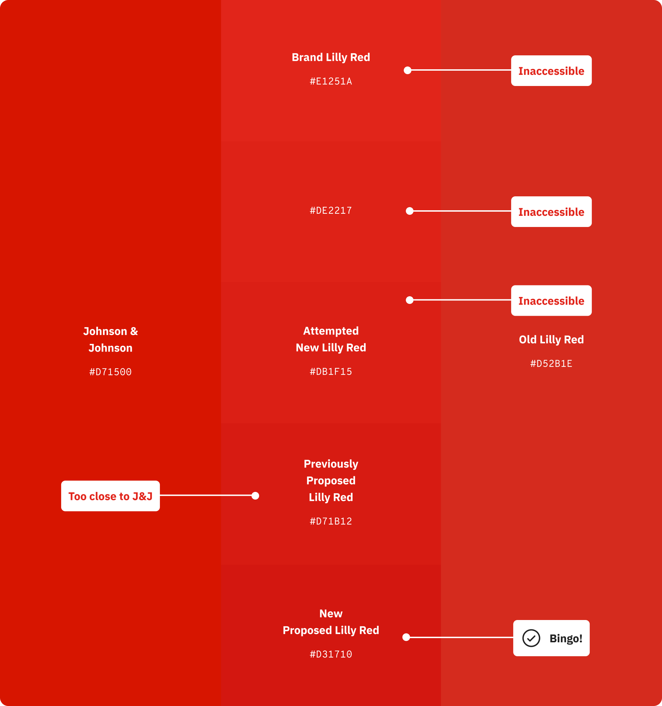
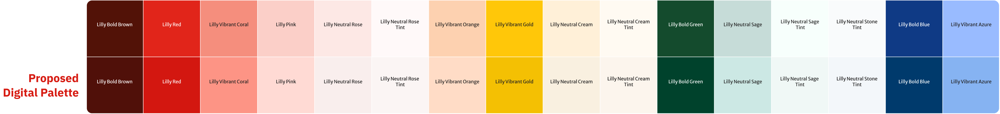
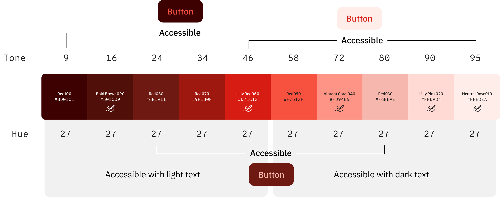
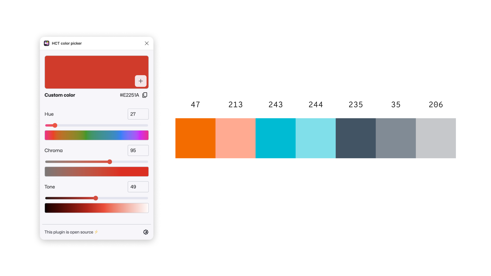
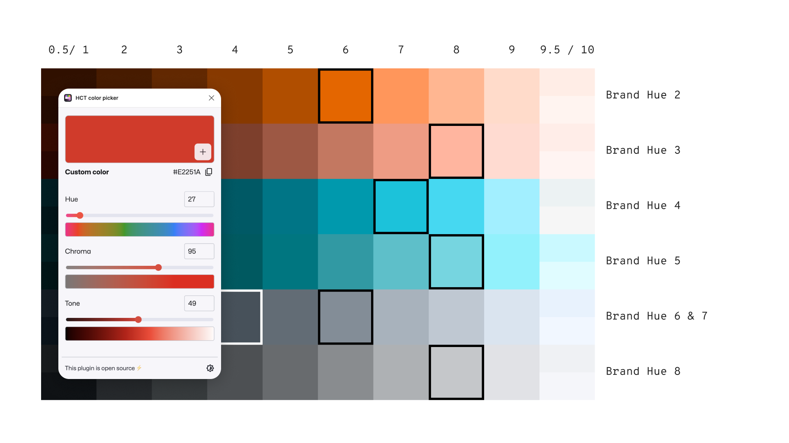
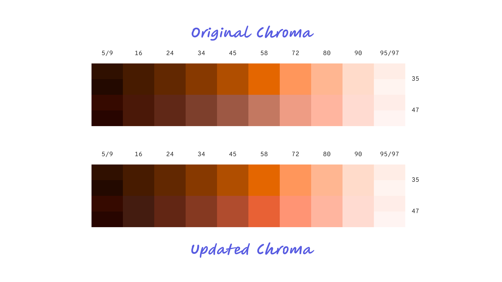
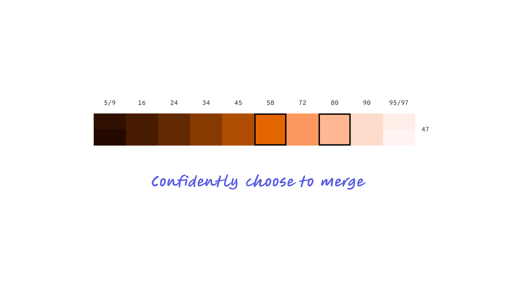
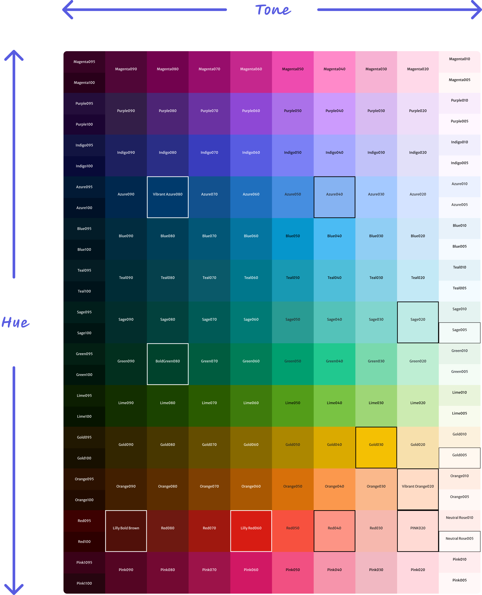

Color Systems · Design Systems · Accessibility · Brand
A Color System Built to Scale Across a Global Brand Portfolio
HCT-based palette architecture designed for accessibility, built to maintain brand integrity, and deployed across a pharmaceutical brand family reaching millions of patients.
Project Overview
A global pharmaceutical company's brand colors were designed for print. When it came time to build a scalable digital color system, those colors failed accessibility standards — and one high-profile brand red was flagged as too close to a major competitor's identity.
Using HCT (Hue, Chroma, Tone) — a perceptually accurate color space that models how humans actually see color — I built a tonal palette framework that resolved both problems. The brand stayed recognizable. The system passed WCAG. And it scaled to every product in the portfolio.
Project Details
From Print Palette to Digital System
The brand's existing palette was designed for print — rich, saturated colors that looked authoritative on paper and in marketing materials. The agency had done their job well. But print colors don't translate directly to screens. What reads as bold in a magazine fails contrast requirements on a button, and what feels differentiated in a campaign can blur uncomfortably close to a competitor's identity in a digital interface.
The full brand palette needed to be converted to digital equivalents — close enough to the originals to maintain brand recognition, but adjusted for the accessibility and visual requirements of a large-scale design system.

Brand print palette (top) vs. brand digital palette (bottom) — each color converted for screen while preserving brand identity
The Red Problem
The brand red was the most contested color in the system. The agency's proposed digital red failed WCAG accessibility contrast requirements — and several iterations of it sat too close in hue to a major competitor's signature brand color. This wasn't a minor tweak; it was a back-and-forth process of proposal, evaluation, and refinement.
Each candidate was tested against accessibility standards and evaluated for competitive differentiation. Going lighter in the tonal space to get closer to the original brand red reintroduced accessibility failures. The resolution was to go one tonal step darker than the previously proposed red — accessible, differentiated, and close enough to the original brand identity that it could be defended.

The red iteration process — from the original inaccessible brand red through multiple candidates to the final approved digital Lilly Red (#D31710)
The outcome: A digital brand red that passed WCAG, maintained clear distance from the competitor's palette, and preserved enough of the original brand character that the agency could stand behind it. The Lilly logo retained its original #E1251A — the system red and the logo red serve different functions and don't compete.
Mapping the Full Red Spectrum
Once the digital brand red was resolved, it needed to be mapped across the complete tonal scale — from near-black at tone 9 through to near-white at tone 95. This scale powers every component state in the system: dark backgrounds, light backgrounds, hover states, focus rings, disabled states, and everything in between.
The HCT framework made this tractable. With hue held constant at 27, the full tonal range was generated perceptually — each step representing a proportional change in perceived lightness rather than a mathematical one. The result is a scale where the accessible range is clearly bounded: tone 24 and below works with light text, tone 72 and above works with dark text.

The complete Lilly Red tonal scale — accessible ranges clearly defined for both light and dark text combinations
Why HCT — and Why It Matters
Traditional color spaces like HSL describe color mathematically, but they don't reflect how humans perceive it. Two colors at the same HSL lightness can look dramatically different in brightness. This creates a problem when you're trying to build a system where color relationships are predictable and accessible by design.
HCT — Hue, Chroma, Tone — is a perceptually uniform color space developed by Google as part of Material You. Tone corresponds to actual perceived lightness, which means you can step colors across a tonal scale and trust that each step will look like a proportional change to the human eye. For accessibility, this is the difference between guessing and knowing.
The practical upshot: By working in HCT, we could take any brand color, map it to its correct position in the tonal scale, and generate accessible light and dark variants with confidence — without losing the hue or vibrancy that made the color feel on-brand.
Building the Digital Palette
The brand's print palette was the starting point — not the destination. Print colors are designed for ink on paper, with different perceptual rules than light on a screen. The first task was converting those colors into their correct HCT equivalents and understanding where they sat in the tonal space.
Hue-matching within each color's own space was critical. Brand colors that appeared close in print sometimes diverged significantly in digital. By aligning them within the HCT framework, we created a palette where tonal transitions between shades feel seamless — colors relate to each other the way a system should, not the way a print swatch book does.

Exploration phase — using the HCT color picker to analyze candidate hues and understand their position in the color space

Tonal mapping — plotting brand hues across the HCT grid to identify accessible tone values for each color family
Refining Lilly Red
The brand's primary red presented the most nuanced challenge. A slight modification was needed to fit within the LDS color-stepping framework — the tonal scale used to generate component states like hover, active, focus, and disabled.
The original chroma values produced tonal steps that were inconsistent with the rest of the palette. By adjusting chroma while holding the hue constant, we arrived at a red that stepped cleanly through the scale, matched the visual weight of adjacent colors, and remained unmistakably on-brand.

Original vs. updated chroma — adjusting chroma while holding hue constant to produce consistent tonal steps
Knowing When to Merge
One of the less obvious decisions in building a tonal system is knowing when two steps are close enough to collapse into one. Adjacent tones that are perceptually indistinguishable create redundancy in the system — extra tokens that developers have to manage without any meaningful visual payoff.
Using HCT's perceptual accuracy, we were able to make this call with confidence rather than intuition. Where two tones were functionally equivalent to human perception, we merged them — simplifying the system without sacrificing fidelity.

Confident tone consolidation — where perceptual difference was negligible, steps were merged to keep the system clean
The System That Came Out the Other Side
The result was a complete tonal color library spanning every brand hue — each one mapped, stepped, and validated for accessibility. The framework wasn't built for one brand. It was built to onboard any brand in the portfolio by dropping their hues into the same stepping system and generating a compliant, consistent palette automatically.
Component states across the entire design system — hover, active, focus, disabled — are now driven by predictable tonal steps rather than ad hoc color decisions. Designers and developers work from the same source of truth. New brands don't start from scratch; they inherit the infrastructure.

The complete LDS color library — every brand hue mapped, stepped, and validated across the full tonal range